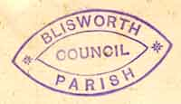
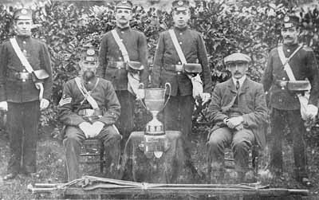
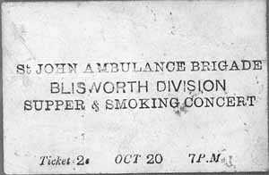

Blisworth Parish Council - early years.
 The Blisworth Parish Council was formed in 1894 in response to a Parliamentary Act. It was chaired briefly by Rev'd Barry and for many years by Walter Alexander's father, Alfred. They found their feet slowly, organising a rubber stamp, an iron box for their papers and a translator, a Rev. Cox of Holdenby, in case any of the Latin documents in the church were important for them and, even then, public liability insurance for themselves and the village lamp-lighter with his "Blisworth Parish" ladder.
At the time of Queen Victoria's Diamond Jubilee in 1897 they resolved to do something "long-lasting in memory of the event". They bought a stretcher for the use of the ambulance class who practiced their drill for first aid and recovery of the injured. Proceedings which followed indicate they could not decide where to keep it - ideas included hanging on the wall by the High Street pump, keep at the (old) school or at the clerk's house (Walter Chester, where the Freestons moved into later). Its final resting place was in Young's shop. After a "long-lasting" interval, in 1908, they donated it to the new ambulance service (St. John). The picture was taken in c. 1910 when the ambulance service won a cup (details unknown). The six gentlemen posed twice for this photograph. For the other picture, for which it has been possibly to provide names, they removed their sashes and the doctor removed his cap! The origin impetus to honour the Queen came by formal letter to all councils in the country. It suggested there might be formed a "Victoria Open Space" and, now in reflection, this would have been an excellent idea because no-one subsequently would have dared to build on it, other than perhaps community amenities.
By 1898 the Council received a directory from the NCC to indicate the adult education which ought to be promoted in the village. Under "Technical Instruction", classes on a wealth of topics as listed in a little red book.
Incidently, before the dangers of smoking were revealed in the 1950s, the service ran fund raising events such as that ticketed below. More research would be needed to discover when this was but it is likely to be pre-WWII.
Another action of the new Blisworth Council was to obtain a drag for the canal and hang it on the wall by the mill. It was some iron contrivance attached to the end of a long pole - all made in the village by Walter Chester and Richard Goodridge. Later they resolved to get another drag of modern design, approved by the Royal Humane Society, based on a coiled-up pair of ropes also hung at the mill. The wooden boss of this new drag was proudly painted ♦ R. H. S. ♦ and a notice beside the two sternly warned they were Blisworth Parish Council property. Clearly, anyone in a hurry could consider whether to use the humane one or not. It would be interesting if anyone has an old catalogue showing what these devices looked like.
 R&A article Dec 05
{kind=link}